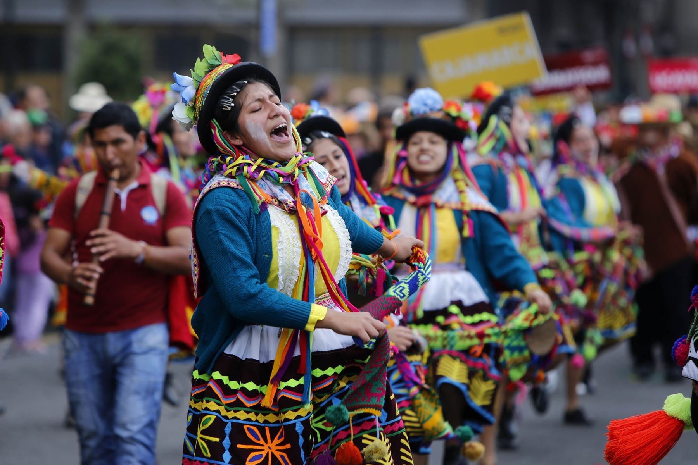
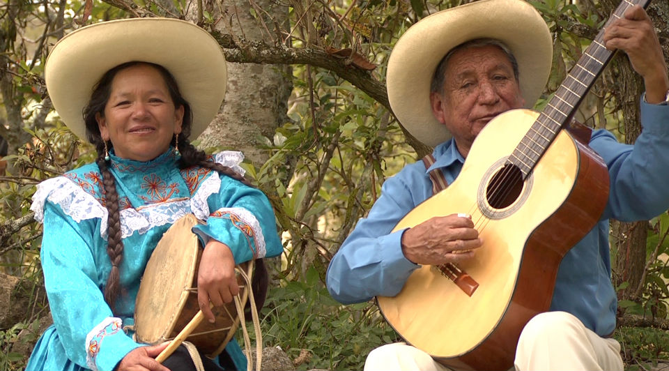
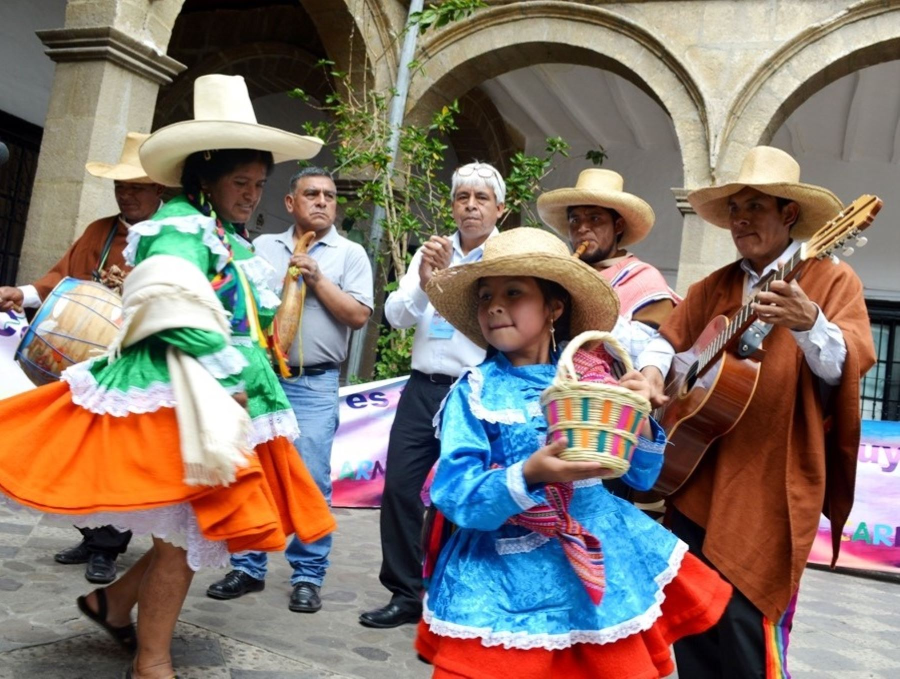

Folklore
Dentro del rico folklore de Cajamarca, se encuentra una amplia variedad de danzas y músicas que destacan por su singularidad y autenticidad, lo que permite a los visitantes distinguir esta región de otras partes del país. Estas expresiones culturales son un reflejo de la identidad y la historia de Cajamarca, transmitidas de generación en generación y enriquecidas por la diversidad de influencias que han convergido en esta tierra.
 |
Musica
Dentro de la rica diversidad musical de Cajamarca destacan el huayno y la música evangélica, embellecidos por instrumentos tradicionales como la quena y la zampoña. Canciones emblemáticas como "La Flor de la Canela" fusionan instrumentos clásicos como la guitarra criolla y el cajón peruano. El san juanito cajamarquino, con quena, charango y violín, transmite la alegría del folclore local. Además, se disfrutan otras melodías como "El Huinco", "Jawari", "Chilili" y "Huaylas", que enriquecen la diversidad musical de la región. Cada una de estas expresiones musicales añade una capa de color y emoción a la rica tapestry sonora de Cajamarca, enriqueciendo aún más su patrimonio cultural.
 |
Danza
En Cajamarca, la danza es un vivo reflejo de la rica fusión entre las culturas española y andina. El Carnaval Mestizo, por ejemplo, no es solo un baile o desfile, sino una celebración donde el agua adquiere protagonismo, ya sea en globos, baldes u otros recipientes, empapando a los participantes en una festividad llena de alegría y color. El Wititi, por su parte, simboliza el inicio de la edad adulta, manifestando los lazos sociales y la identidad cultural de quienes lo ejecutan. La Danza de Huaylarsh, dedicada a la diosa Pachamama durante la temporada de cosecha y siembra, es una expresión de gratitud hacia la tierra que provee. Además de estas, otras danzas emblemáticas incluyen los Chunchos de Porcon, las Pallitas de Yanabamba y el Jawari, cada una con su propia historia y significado arraigado en la tradición y el folclore cajamarquino.
 |